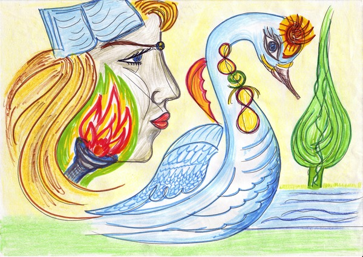
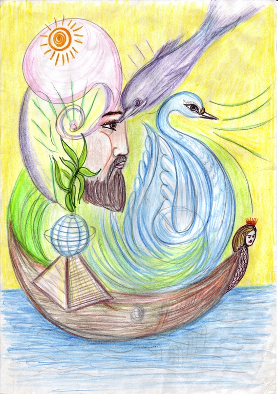
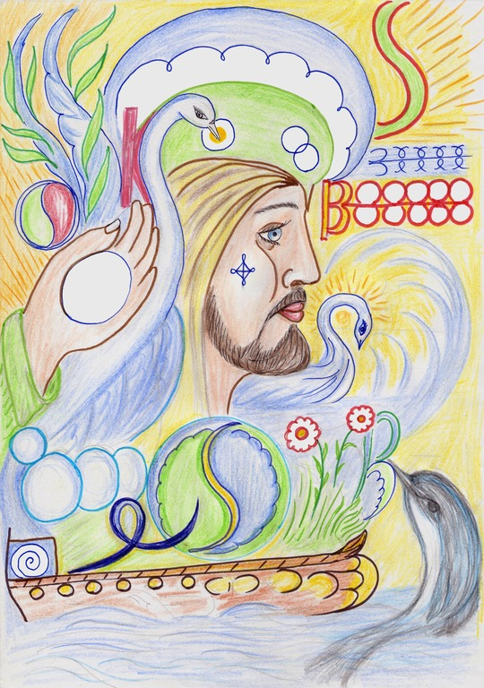
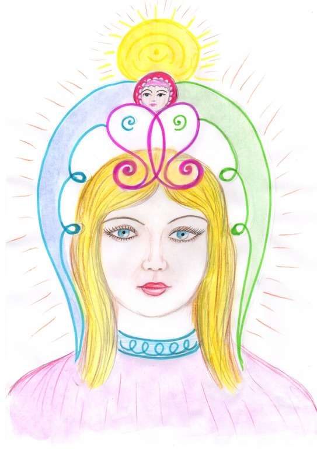

Результаты применения методов альтернативной психологии для коррекции фазового состояния г. Волгограда
Я.С. Ибадов (г. Баку, Азербайджан)
Е.В. Росликова (г. Волгоград)
В 2004 г. жители Волгограда, знакомые с новой наукой Альтернативной психологией, обратились к доктору Яшару Ибадову с просьбой создать фазовый портрет (ФП) их легендарного города на Волге. К этому времени методы АП (психография, психургия, Фазовый портрет- систем) были успешно апробированы в индивидуальной работе с пациентами. АП изучает «метаморфозные признаки живых организованных систем, их взаимосвязь с окружающим миром во времени и пространстве» [1, с. 5]. Методы АП позволяют исследовать, диагностировать и корректировать характер взаимодействия человека с окружающей средой на информационно- энергетическом уровне.
Следует отметить, что сам процесс создания ФП включает несколько этапов предварительной работы с использованием методов психографии для получения информации о состоянии исследуемого объекта и устранения негативных записей, ставших причинами искажения нормального процесса метаморфоз. Фазовый портрет является стадией коррекции с настройкой на оптимальный энерго-информационный образ человека в каком-либо промежутке времени [2].
В дальнейшем оказалось возможным применить метод ФП в работе не только с людьми, но и с другими объектами живой и неживой природы. Это могут быть биологические организмы, экологические системы (водоемы, природные парки, планета Земля и т.д.) и социально-экологические системы (города, населенные пункты), имеющие свои собственные метаморфозные признаки, информационно-энергетические ресурсы и закономерности развития при смене фазовых состояний.
Необходимость проведения коррекции по методу психографии и создания ФП именно для города Волгограда обусловлена его особой исторической значимостью как города-перекрестка цивилизаций. С древнейших времен в междуречье Волги и Дона располагались наиболее удобные перевозы и переволоки, соединяющие западные страны с Персией, Средней Азией и Закавказьем. Петр 1 придал Царицыну статус сторожевой крепости, ключевой «заставы» на юго-восточных границах Российского государства, и со второй половины XIX столетия Царицын превратился в крупнейший торговый, а затем промышленный узел Нижнего Поволжья. В годы Гражданской войны окрестности Царицына были ареной жестоких сражений Красной Армии с белой гвардией. Легендарная победа советских войск под Сталинградом в 1943 г. положила начало коренному перелому в ходе всей Второй мировой войны, способствовала распаду фашистского блока и укреплению антигитлеровской коалиции. Современный Волгоград – крупный промышленный и культурный центр юга России, «порт пяти морей», расположенный на пересечении важнейших транспортных магистралей: железнодорожных, автомобильных, водных, воздушных.
В единой космической голограмме имеют место записи всех исторических событий – и позитивные, и негативные. Энерго- информационная память живой организованной системы «город Волгоград» была переполнена записями, тормозившими ее нормальное экономическое, социальное, культурное, духовное развитие. На городе стояла Печать Скорби, и он воспринимался как Единый Мемориальный Комплекс: монумент «Родина-Мать зовет!» получил титул «шестого чуда» в России, а Мамаев Курган – статус «Главной высоты России» [3].
Городу с героическим прошлым нужна была помощь в настоящем времени для раскрытия будущих возможностей. Для «включения» процесса позитивных метаморфоз требовалось создание ФП данной системы.
Первый фазовый портрет г. Волгограда был создан в мае 2004 года, второй – в 2005 году, третий – в 2007 году, четвертый – в 2013 году. Фазовый портрет г. Волгограда представляет собой энерго-информационную матрицу города. Психокоррекция энерго-информационных характеристик живой системы «город» происходит на уровне Причин Метаморфоз и позволяет изменить качество записи информации во Времени.
Важно отметить, что в настоящее время все четыре фазовых портрета одновременно выполняют необходимую работу для города, при этом мы можем отследить изменения в процессе развития образа города при смене его фазовых состояний.
Фазовые портреты отображают реальные позитивные метаморфозы, происходящие в жизнедеятельности города Волгограда на уровне символики, и мы в развитии города отмечаем соответствующие фактические перемены, подтверждающие эффективность многолетней работы.
Образ Волги – великой русской реки (по сути слова «Волга» означает «Воля Господа») и «главной улицы города» – присутствует на ФП-I портрете только в третьем квадрате. Волга выполняет функцию защиты, непроходимой преграды для негативного мира, что проявлялось в реальных событиях: во время Второй мировой войны река останавливала продвижение разрушительных сил. В результате ее воды были сильно загрязнены информационно, что потребовало дополнительных методов коррекции. На первом фазовом портрете движение воды практически отсутствует, в реальной жизни города это проявлялось не только экологическими проблемами, но и проблемами дорожного движения. Однако пути и дороги, их развитие в будущем были заложены уже в первом ФП, на втором ФП это движение активизируется, а на третьем ФП движению реки задаются ритм и течение, что свидетельствует о процессе трансформации, позитивных метаморфоз. В 2018 году Волгоград получил почетное право принимать у себя Чемпионат мира по футболу, для города это событие инициировало огромные позитивные перемены: модернизирована городская инфраструктура, благоустроены улицы и набережная, построены дороги, тоннели, новый международный терминал аэропорта. И сегодня в этом направлении не останавливаются работы: планируется открытие Нулевой Продольной и Третьей Продольной магистралей, прокладываются экологические тропы, развивается агротуризм, ведется реконструкция Волго- Донского судоходного канала, разрабатываются крупные туристические проекты, например «Великий шелковый путь», символически связывающий Восточную Азию со Средиземноморьем. Территория Нижней Волги с давних времен являлась важным местом пересечения торговых путей и дорог.
Тонкая зеленая полоса внизу ФП-1 соответствует правому, высокому берегу реки, на котором расположен город, и говорит о появлении материального основания для дальнейшего становления города. А «по ту сторону» реки мы видим Дерево, которое одновременно напоминает пламя свечи и слезу. После захоронения 35 тысяч погибших защитников Сталинграда в братской могиле на Мамаевом кургане были высажены пирамидальные тополя, которые символизировали души погибших бойцов. Дерево на портрете соответствует именно этому виду тополя. Растительная символика присутствует и на последующих фазовых портретах. На ФП-II это Росток, расположенный над пирамидой-усыпальницей: символ возрождения духовного тела растительного происхождения человечества (на масштабы и задачи происходящих метаморфоз указывает образ Земного шара).
09.05.2005 года на Мамаевом кургане, рядом с монументом «Родина- Мать зовет!» был воздвигнут Храм Всех Святых в память погибших воинов. В конце 2004 года был освящен первый в мире самоходный плавучий храм- корабль «Святой Владимир» с частицами мощей Александра Невского и Федора Ушакова, созданный в Волгограде специально для исполнения миссионерской деятельности: проведение богослужений, крещений и других таинств в населенных пунктах Волгоградской Астраханской и Саратовской областей, где нет храмов.
И уже на Третьем фазовом портрете сформировалось Древо, приносящее духовные плоды, ценности, лежащие в основе человеческой цивилизации: любовь, радость, мир, долготерпение, милосердие, веру, праведность. Они нарабатываются в труде и сотворчестве и требуют определенного уровня развития человеческого сознания. На ФП-III отображены три уровня раскрытия сознания: в плане физическом (символ яйца и монады), душевном (образ Лебедя) и духовном (сфера сознания с ангельской символикой над головой Старца).
На фазовых портретах Волгограда присутствует образ Дельфина, указывающего путь движению ковчега в Будущее и ориентиры обновления: символическая буква «Р» с духовным крылом (религия приобретает во времени новое качество) и цветы в Чаше Жизни (этот дар материализовался для Волгограда открытием чудесного озера с цветущими лотосами на Лебяжьей Поляне). Озеро обнаружили в 2007 году, а для публичных посещений оно стало доступным через два года, когда через Волгу был построен мост, названный позднее в народе «танцующим», после того, как мост выстоял под натиском ураганного ветра.
Уже на первом этапе создания серии фазовых портретов Волгограда Доктор Яшар Ибадов назвал основные направления развития города, необходимые для его преображения: культура, экология, образование и демография.
Демографическая ситуация значительно улучшилась, благодаря
открытию в 2010 году областного перинатального центра.
«Колыбель-усыпальница» стала Колыбелью Жизни.
Самым узнаваемым символом Волгограда во всем мире является
монумент «Родина-Мать зовет!». Закономерно, что на первом фазовом
портрете города сразу проявился Женский Образ, и обозначилась связанная с
ним задача.
Символ Родина-Мать наработал такую силу, что даже в мирное время женщина по инерции продолжала сдерживать негативный мир мечом и призывом, сжигая при этом свой творческий потенциал (изображение горящего факела), защищая всеми силами души место жизни и саму Жизнь (Лебедь с огненным крылом). На ФП-1 Женщина одухотворена и «запечатана» в скорбь. Здесь же присутствуют знаки, указывающие на ожидаемые перемены. Семь лепестков огня на левой щеке Женского Образа символизируют возрождение силы семьи: женщина станет настоящей хранительницей домашнего очага, перестанет выполнять прежде необходимую функцию женщины-воительницы.
Такие метаморфозы возможны. В символе, находящемся на челе женщины, сконцентрирована духовная сила материнства, сохранена и возрождается чистая изначальная информация человечества, его биоэнергетическая матрица, дающая возможность рождения на свет детей, которые будут вписаны в Книгу Жизни (образ Книги расположен в духовном квадрате). Женщина донесла эту задачу до наших дней и передала Мужчине, чтобы он мог провести в жизнь закономерные метаморфозы. И уже на Втором Фазовом портрете мы видим, как иньское начало объединяется с янским и появляется образ Мужчины, который берет на себя задачи руководства и водительства. А на ФП-3, созданном в 2007 году, мужской образ достигает высокого уровня одухотворенности – мы видим образ Старца, Ангела-Хранителя нашего города.
В том же 2007 году в самом центре Волгограда был установлен памятник Александру Невскому, который официально признан церковью духовным покровителем города. На народные пожертвования началось восстановление храма Александра Невского, разрушенного большевиками в 1932 г. К юбилею православного князя – в 2021 году состоялось торжественное открытие храма.
Четвертый Фазовый портрет Волгограда показывает результаты работы с городом методами Альтернативной Психологии на протяжении девяти лет. Впервые Образ изображен анфас, открылось лицо города (на физическом плане произошло обновление Набережной – «лица города»). Символически изображена гармония природных стихий (действительно, климатические и погодные условия в регионе стали мягче и благоприятнее). Свидетельство позитивных перемен – присутствие на фазовом портрете симметрии и Символа Жизни.
Таким образом, в процессе работы по созданию серии фазовых портретов восстановлена запись творческого потенциала города в космической голограмме, остановлена программа самоуничтожения живой организованной системы «город Волгоград». Подобно тому, как момент рисования фазового портрета конкретного лица считается началом нового этапа его жизни, так момент рисования фазового портрета города считается началом нового этапа жизни этого города, который дает возможность реализации пути и налаживания жизни всех горожан, позитивного развития всех социально-экологических систем в пределах данного пространства.
Литература:
1. Авторские права на новый научный подход, разработанный доктором
медико-биологических наук, профессором Яшаром Ибадовым,
зарегистрированы Российским Авторским Обществом в Реестре за № 6274 от
3 марта 2003 г.
2. Ибадов Я. Психография как метод всестороннего развития новой
личности. – Тюмень: Истина, 2007.
3. Росликова Е.В. «Фазовый портрет Города»: апробация метода в
исследовании социально-экологических проблем г. Волгограда, Материалы
I Международной научно-практической конференции "Альтернативная
психология и пути становления новой личности". Украина, Крым,
Севастополь. 18-20 сентября 2011г.



